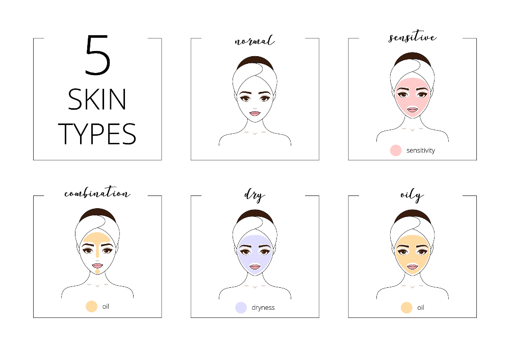

According to the American Academy of Dermatology (AAD), there are five primary types of skin: oily, dry, normal, combination, and sensitive. Each skin type has its own set of unique characteristics and needs that can affect the look and feel of your complexion. It is important to keep in mind that every skin type is perfectly normal.
 Firstly, wash your face just like you normally do. After that, do not apply any products to your face. Keep it like that for 30 minutes. Torn a tissue into two thin layers and put them on your face.If the pieces of tissue don’t fall off but stick on your face for a long time, you can see a lot of oil on them. Then, you have oily skin.If the pieces of tissue fall off within the second you put them on, you see only a few little dots of oil on the tissues. Then, you have dry skin.If the pieces of tissue don’t stick for too long but don’t fall off within the second you put them on, you can see dots of oil but not too much. Then, you have normal skin which does not have too much oil and is not too dry.If the pieces of tissue stick to certain parts of your face but the pieces of tissue fall off immediately on other parts of your face. Then, you have combination skin. Most of the time it is oily on your forehead and nose (T zone) but dry or normal on your cheek and chin (U zone). However, it could be different because everyone is different.
You know you have oily skin if your skin constantly looks shiny, and you go through several blotting sheets a day. Oily skin can even feel greasy within hours of cleansing. Oily skin happens when your glands produce too much sebum, which can lead to a greasy surface, clogged pores, and acne.
Dry skin generally produces less natural oils than other types of skin. This may cause it to appear dull and become rough, flaky, or even scaly. It often feels tight or less elastic, noticeably dehydrated, and may be prone to showing more visible fine lines. In addition, it may become itchy or irritated. Severe dry skin may crack and bleed.
Combination skin includes areas that are dry as well as oily—with the T-zone commonly being oily, and the cheeks being either dry or normal. This skin type can vary during different seasons of the year, and due to various factors, such as stress or hormone fluctuation.
Normal skin is balanced—feeling neither too dry nor too oily. It has regular texture, no imperfections and a clean, soft appearance, and does not need special care. It is not prone to breakouts, flakiness, or feeling greasy or tight. People with normal skin typically have pores that are small, a smooth skin texture, and are less prone to sensitivity or blemishes.
Sensitive skin is more prone to react to stimuli to which normal skin has no reaction. It is fragile skin, usually accompanied by feelings of discomfort, such as heat, tightness, redness or itching. Everyone can have sensitive skin; for example, you could have oily skin and sensitive skin, or you could have combination skin and also sensitive skin.
skintypeIf your skin is oily, do not use soap that will dry out your skin. Use a gentle natural soap. A bar of natural soap with citrus essential oils like Aloe Vera or Lemon or Lavender can help balance skin oils. We also recommend Neem & Tea Tree and Seabuckthorn & Tea Tree Soaps.
Any natural soap containing vegetable oils, cocoa butter, olive oil, aloe vera, jojoba, and avocado are perfect for dry skin.
For combination skin – Glycerin-based soaps suit people with a combination skin type. Glycerin soaps are soaps that contain glycerol, a component of fat or oil. They are recognizably different from other soaps because they are translucent.
We suggest that people with sensitive skin begin with soaps that contain no essential oils. Soaps like Goat Milk Oatmeal, Carrot & Honey, Milk & Honey Baby Soap, and Chamomile Calendula Soap are great for both normal and sensitive skin. Some people have also found the Sea Buckthorn and Neem and Tea Tree soaps to be very helpful. Simple, wholesome skin care is best.
Click the image to know more about soap =====>